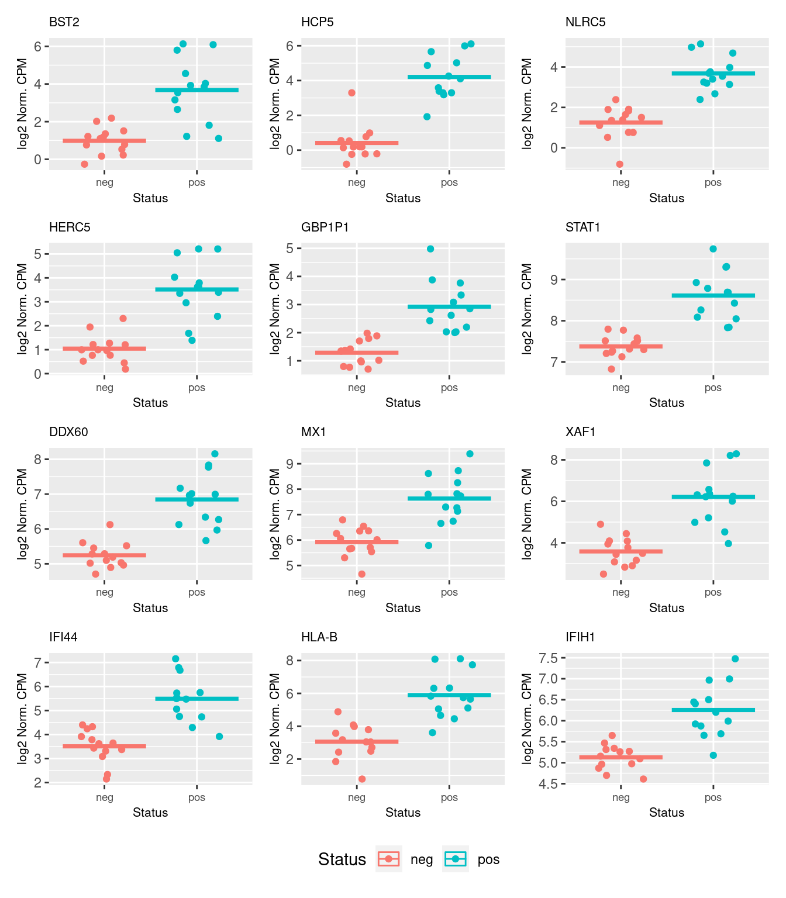
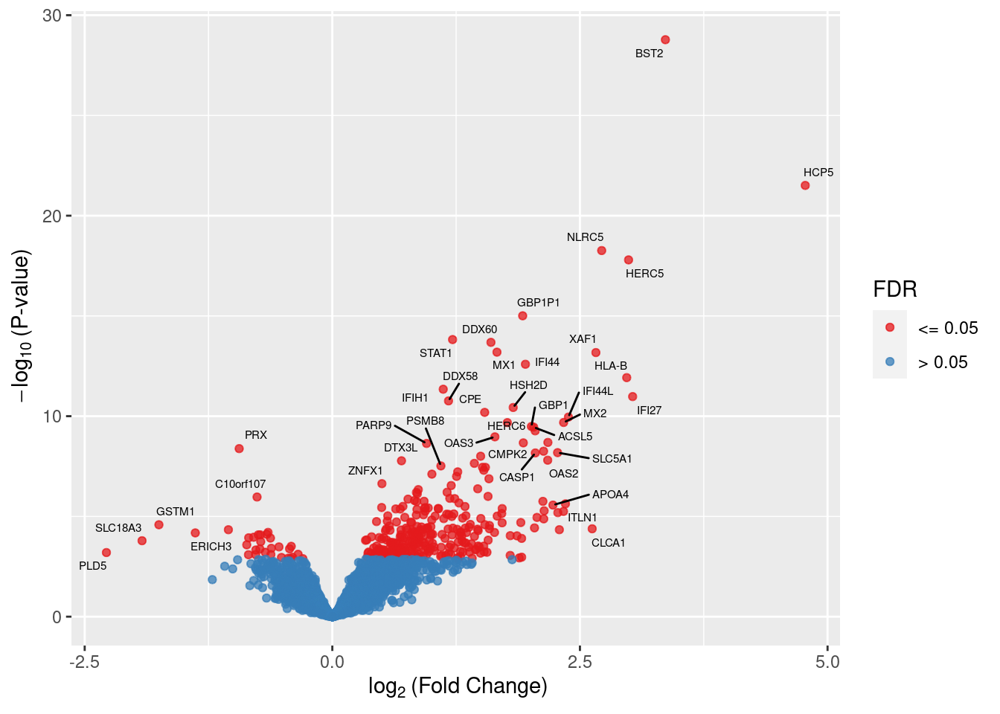

RUVseq-edgeR paired analysis of ALL samples
Last updated: 2021-11-24
Checks: 7 0
Knit directory: amnio-cell-free-RNA/
This reproducible R Markdown analysis was created with workflowr (version 1.6.2). The Checks tab describes the reproducibility checks that were applied when the results were created. The Past versions tab lists the development history.
Great! Since the R Markdown file has been committed to the Git repository, you know the exact version of the code that produced these results.
Great job! The global environment was empty. Objects defined in the global environment can affect the analysis in your R Markdown file in unknown ways. For reproduciblity it’s best to always run the code in an empty environment.
The command set.seed(20200224) was run prior to running the code in the R Markdown file. Setting a seed ensures that any results that rely on randomness, e.g. subsampling or permutations, are reproducible.
Great job! Recording the operating system, R version, and package versions is critical for reproducibility.
Nice! There were no cached chunks for this analysis, so you can be confident that you successfully produced the results during this run.
Great job! Using relative paths to the files within your workflowr project makes it easier to run your code on other machines.
Great! You are using Git for version control. Tracking code development and connecting the code version to the results is critical for reproducibility.
The results in this page were generated with repository version d2811a1. See the Past versions tab to see a history of the changes made to the R Markdown and HTML files.
Note that you need to be careful to ensure that all relevant files for the analysis have been committed to Git prior to generating the results (you can use wflow_publish or wflow_git_commit). workflowr only checks the R Markdown file, but you know if there are other scripts or data files that it depends on. Below is the status of the Git repository when the results were generated:
Ignored files:
Ignored: .Rhistory
Ignored: .Rproj.user/
Ignored: .bpipe/
Ignored: analysis/obsolete_analysis/
Ignored: code/.bpipe/
Ignored: code/.rnaseq-test.groovy.swp
Ignored: code/obsolete_analysis/
Ignored: data/.bpipe/
Ignored: data/190717_A00692_0021_AHLLHFDSXX/
Ignored: data/190729_A00692_0022_AHLLHFDSXX/
Ignored: data/190802_A00692_0023_AHLLHFDSXX/
Ignored: data/200612_A00692_0107_AHN3YCDMXX.tar
Ignored: data/200612_A00692_0107_AHN3YCDMXX/
Ignored: data/200626_A00692_0111_AHNJH7DMXX.tar
Ignored: data/200626_A00692_0111_AHNJH7DMXX/
Ignored: data/CMV-AF-database-corrected-oct-2020.csv
Ignored: data/CMV-AF-database-final-included-samples.csv
Ignored: data/GONE4.10.13.txt
Ignored: data/HK_exons.csv
Ignored: data/HK_exons.txt
Ignored: data/HK_genes.txt
Ignored: data/IPA molecule summary.xls
Ignored: data/IPA-molecule-summary.csv
Ignored: data/brain-development-geneset.txt
Ignored: data/deduped_rRNA_coverage.txt
Ignored: data/gene-transcriptome-analysis/
Ignored: data/hg38_rRNA.bed
Ignored: data/hg38_rRNA.saf
Ignored: data/ignore-overlap-mapping/
Ignored: data/ignore/
Ignored: data/joindata.csv
Ignored: data/metadata.csv
Ignored: data/rds/
Ignored: data/salmon-pilot-analysis/
Ignored: data/samples.csv
Ignored: data/star-genome-analysis/
Ignored: output/c2Ens.RData
Ignored: output/c5Ens.RData
Ignored: output/hEns.RData
Ignored: output/keggEns.RData
Ignored: output/obsolete_output/
Untracked files:
Untracked: code/est-rRNA-cont.groovy
Untracked: output/star-fc-limma-voom-no_us_ab.csv
Unstaged changes:
Modified: .gitignore
Note that any generated files, e.g. HTML, png, CSS, etc., are not included in this status report because it is ok for generated content to have uncommitted changes.
These are the previous versions of the repository in which changes were made to the R Markdown (analysis/STAR-FC-RUV-all.Rmd) and HTML (docs/STAR-FC-RUV-all.html) files. If you’ve configured a remote Git repository (see ?wflow_git_remote), click on the hyperlinks in the table below to view the files as they were in that past version.
| File | Version | Author | Date | Message |
|---|---|---|---|---|
| Rmd | d2811a1 | Jovana Maksimovic | 2021-11-24 | wflow_publish(files = paste0(“analysis/”, list.files(“analysis/”, |
| html | ccd6c80 | Jovana Maksimovic | 2021-10-29 | Build site. |
| Rmd | 02eba43 | Jovana Maksimovic | 2021-10-29 | wflow_publish(c(“analysis/index.Rmd”, “analysis/STAR-FC-all.Rmd”, |
| html | 77ba079 | Jovana Maksimovic | 2021-09-25 | Build site. |
| Rmd | e20c62d | Jovana Maksimovic | 2021-09-25 | wflow_publish(c(“analysis/index.Rmd”, “analysis/salmon-limma-voom.Rmd”, |
| Rmd | 2b6479a | Jovana Maksimovic | 2021-07-26 | Move/remove olds files. |
| html | d96660b | Jovana Maksimovic | 2020-11-09 | Build site. |
| Rmd | d32e63b | Jovana Maksimovic | 2020-11-09 | wflow_publish(c(“analysis/STAR-FC-all.Rmd”, “analysis/STAR-FC-exclude-US-ab.Rmd”, |
library(here)
library(tidyverse)
library(EnsDb.Hsapiens.v86)
library(readr)
library(limma)
library(edgeR)
library(NMF)
library(patchwork)
library(EGSEA)
library(RUVSeq)
source(here("code/output.R"))The data showed some adapter contamination and sequence duplication issues. Adapters were removed using Trimmomatic and both paired and unpaired reads were retained. Only paired reads were initially mapped with Star in conjunction with GRCh38 and gencode_v34 to detect all junctions, across all samples. Paired and unpaired reads were then mapped to GRCh38 separately using Star. Duplicates were removed from paired and unpaired mapped data using Picard MarkDuplicates. Reads were then counted across features from gencode_v34 using featureCounts.
Data import
Set up DGElist object for downstream analysis. Sum paired and unpaired counts prior to downstream analysis.
rawPE <- read_delim(here("data/star-genome-analysis/counts-pe/counts.txt"),
delim = "\t", skip = 1)
rawSE <- read_delim(here("data/star-genome-analysis/counts-se/counts.txt"),
delim = "\t", skip = 1)
samps <- strsplit2(colnames(rawPE)[c(7:ncol(rawPE))], "_")[,5]
batch <- factor(strsplit2(colnames(rawPE)[c(7:ncol(rawPE))],
"_")[,1], labels = 1:2)
batch <- tibble(batch = batch, id = samps)
colnames(rawPE)[7:ncol(rawPE)] <- samps
colnames(rawSE)[7:ncol(rawSE)] <- samps
counts <- rawPE[, 7:ncol(rawPE)] + rawSE[, 7:ncol(rawSE)]
dge <- DGEList(counts = counts,
genes = rawPE[,c(1,6)])
dgeAn object of class "DGEList"
$counts
CMV30 CMV31 CMV8 CMV9 CMV26 CMV27 CMV14 CMV15 CMV20 CMV21 CMV1 CMV2 CMV3 CMV4
1 0 0 0 0 2 2 0 1 0 1 1 0 1 0
2 58 95 58 59 113 101 60 48 79 71 54 63 39 46
3 1 0 0 0 0 0 0 0 0 0 0 0 0 0
4 0 0 0 0 0 0 0 0 0 0 1 0 1 0
5 0 0 0 0 0 0 0 0 0 0 0 0 0 0
CMV10 CMV11 CMV18 CMV19 CMV35 Corriel NTC-2 CMV51 CMV52 CMV53 CMV54 CMV56
1 0 0 0 0 1 1 0 0 0 0 0 0
2 62 35 51 45 59 84 0 63 28 49 46 37
3 0 0 0 0 0 1 0 0 0 0 0 0
4 0 0 0 0 0 0 0 0 0 0 0 0
5 0 0 0 0 0 0 0 0 0 0 0 0
CMV57 CMV58 CMV60 CMV61
1 0 2 1 2
2 59 82 44 36
3 0 0 0 0
4 0 0 1 0
5 0 0 0 0
60664 more rows ...
$samples
group lib.size norm.factors
CMV30 1 4673630 1
CMV31 1 5232010 1
CMV8 1 3594801 1
CMV9 1 3425478 1
CMV26 1 4892776 1
25 more rows ...
$genes
Geneid Length
1 ENSG00000223972.5 1735
2 ENSG00000227232.5 1351
3 ENSG00000278267.1 68
4 ENSG00000243485.5 1021
5 ENSG00000284332.1 138
60664 more rows ...Load sample information and file names.
samps1 <- read_csv(here("data/CMV-AF-database-corrected-oct-2020.csv"))
samps2 <- read_csv(here("data/samples.csv"))
samps1 %>% full_join(samps2, by = c("sequencing_ID" = "SampleId")) %>%
mutate(pair = ifelse(!is.na(matched_pair), matched_pair,
ifelse(!is.na(MatchedPair), MatchedPair, NA)),
CMV_status = ifelse(!is.na(CMV_status), CMV_status,
ifelse(!is.na(TestResult), TestResult, NA)),
Sex = toupper(Sex),
Indication = tolower(Indication)) %>%
dplyr::rename(sex = Sex,
id = sequencing_ID,
indication = Indication,
GA_at_amnio = `GA_at_amnio-completed_weeks`) -> samps
read_csv(file = here("data/metadata.csv")) %>%
inner_join(read_csv(file = here("data/joindata.csv")),
by = c("Record.ID" = "UR")) %>%
right_join(samps, by = c("ID post-extraction" = "id")) %>%
na_if("NA") %>%
mutate(sex = ifelse(!is.na(sex), sex,
ifelse(!is.na(Sex), toupper(Sex), NA)),
GA_at_amnio = ifelse(!is.na(GA_at_amnio), GA_at_amnio,
ifelse(!is.na(GA.at.amnio), GA.at.amnio, NA))) %>%
dplyr::rename(id = `ID post-extraction`) %>%
dplyr::select(id,
CMV_status,
pair,
sex,
GA_at_amnio,
indication) %>%
left_join(batch) %>%
dplyr::filter(id %in% colnames(dge)) %>%
drop_na() -> targets
m <- match(colnames(dge), targets$id)
targets <- targets[m[!is.na(m)], ]
targets# A tibble: 26 x 7
id CMV_status pair sex GA_at_amnio indication batch
<chr> <chr> <chr> <chr> <chr> <chr> <fct>
1 CMV30 pos L1 F 21 no_us_ab 1
2 CMV31 neg L1 F 21 no_us_ab 1
3 CMV8 neg L2 F 23 no_us_ab 1
4 CMV9 pos L2 F 23 no_us_ab 1
5 CMV26 pos L3 F 22 no_us_ab 1
6 CMV14 neg L4 F 21 no_us_ab 1
7 CMV15 pos L4 F 22 no_us_ab 1
8 CMV20 pos L5 M 21 no_us_ab 1
9 CMV21 neg NC1 F 21 no_us_ab 1
10 CMV1 pos M1 F 21 no_us_ab 1
# … with 16 more rowsQuality control
Genes that do not have an adequate number of reads in any sample should be filtered out prior to downstream analyses. From a biological perspective, genes that are not expressed at a biologically meaningful level in any condition are not of interest. Statistically, we get a better estimate of the mean-variance relationship in the data and reduce the number of statistical tests that are performed during differential expression analyses.
Filter out lowly expressed genes and genes without Entrez IDs and calculate TMM normalization factors.
z <- dge[, colnames(dge) %in% targets$id] # retain only relevant samples
z$genes$Ensembl <- strsplit2(z$genes$Geneid, ".", fixed = TRUE)[,1]
z$group <- targets$CMV_status
edb <- EnsDb.Hsapiens.v86 # add Gene Symbols and Entrez IDs
z$genes <- left_join(z$genes, ensembldb::genes(edb,
filter = GeneIdFilter(z$genes$Ensembl),
columns = c("gene_id",
"symbol",
"entrezid"),
return.type = "data.frame"),
by = c("Ensembl" = "gene_id"))
z$genes$entrezid <- unlist(sapply(z$genes$entrezid, function(x) {
if(is.null(x)) NA else x[length(x)]
}), use.names = FALSE)
keep <- !is.na(z$genes$entrezid) & !is.null(z$genes$entrezid)
x <- z[keep, ] # remove genes without Entrez IDs
keep <- filterByExpr(x, group = z$group)
x <- x[keep, ] # remove lowly expressed genes
y <- calcNormFactors(x)
yAn object of class "DGEList"
$counts
CMV30 CMV31 CMV8 CMV9 CMV26 CMV14 CMV15 CMV20 CMV21 CMV1 CMV2 CMV3 CMV4
32 20 36 28 42 28 25 19 26 18 32 25 55 31
52 88 73 55 43 55 75 53 64 55 61 68 36 62
55 6 15 17 15 15 9 14 13 12 7 10 16 12
63 148 172 148 126 175 179 176 141 179 155 194 121 123
64 14 15 14 11 20 14 9 13 14 13 13 19 10
CMV10 CMV11 CMV19 CMV35 CMV51 CMV52 CMV53 CMV54 CMV56 CMV57 CMV58 CMV60
32 15 11 22 24 25 19 23 20 18 23 24 8
52 69 11 35 47 59 49 42 37 38 49 65 49
55 7 2 11 9 19 9 6 12 7 7 7 5
63 156 44 107 164 144 71 71 137 136 122 131 88
64 9 3 6 9 14 3 9 12 5 7 12 5
CMV61
32 20
52 49
55 6
63 108
64 3
12727 more rows ...
$samples
group lib.size norm.factors
CMV30 1 4673630 1.017563
CMV31 1 5232010 1.052277
CMV8 1 3594801 1.052059
CMV9 1 3425478 1.026378
CMV26 1 4892776 1.068518
21 more rows ...
$genes
Geneid Length Ensembl symbol entrezid
32 ENSG00000230021.10 5495 ENSG00000230021 RP5-857K21.4 101928626
52 ENSG00000228794.10 15682 ENSG00000228794 LINC01128 643837
55 ENSG00000230368.2 1971 ENSG00000230368 FAM41C 284593
63 ENSG00000188976.11 5540 ENSG00000188976 NOC2L 26155
64 ENSG00000187961.14 3402 ENSG00000187961 KLHL17 339451
12727 more rows ...
$group
[1] "pos" "neg" "neg" "pos" "pos"
21 more elements ...Plotting the distribution log-CPM values shows that a majority of genes within each sample are either not expressed or lowly-expressed with log-CPM values that are small or negative.
L <- mean(z$samples$lib.size) * 1e-6
M <- median(z$samples$lib.size) * 1e-6
par(mfrow = c(1,2))
lcpmz <- cpm(z, log = TRUE)
lcpm.cutoff <- log2(10/M + 2/L)
nsamples <- ncol(z)
col <- scales::hue_pal()(nsamples)
plot(density(lcpmz[,1]), col = col[1], lwd = 1, ylim = c(0, 2), las = 2,
main = "", xlab = "")
title(main = "Unfiltered data", xlab = "Log-cpm")
abline(v = lcpm.cutoff, lty = 3)
for (i in 2:nsamples){
den <- density(lcpmz[,i])
lines(den$x, den$y, col = col[i], lwd = 1)
}
lcpmy <- cpm(y, log=TRUE)
plot(density(lcpmy[,1]), col = col[1], lwd = 1, ylim = c(0, 0.25), las = 2,
main = "", xlab = "")
title(main = "Filtered data", xlab = "Log-cpm")
abline(v = lcpm.cutoff, lty = 3)
for (i in 2:nsamples){
den <- density(lcpmy[,i])
lines(den$x, den$y, col = col[i], lwd = 1)
}
| Version | Author | Date |
|---|---|---|
| d96660b | Jovana Maksimovic | 2020-11-09 |
Although in excess of 30 million reads were obtained per sample, we can see that after mapping, duplicate removal and quantification of gene expression the median library size is just under than 4 million reads. This suggests that we are likely to only be capturing the most abundant cfRNAs.
It is assumed that all samples should have a similar range and distribution of expression values. The raw data looks fairly uniform between samples, although TMM normalization further improves this.
dat <- data.frame(lib = y$samples$lib.size,
status = y$group,
sample = colnames(y))
p1 <- ggplot(dat, aes(x = sample, y = lib, fill = status)) +
geom_bar(stat = "identity") +
theme(axis.text.x = element_text(angle = 45, hjust = 1)) +
labs(x = "Sample", y = "Library size",
fill = "CMV Status") +
geom_hline(yintercept = median(dat$lib), linetype = "dashed") +
scale_x_discrete(limits = dat$sample)
dat <- reshape2::melt(cpm(y, normalized.lib.sizes = FALSE, log = TRUE),
value.name = "cpm")
dat$status <- rep(y$group, each = nrow(y))
colnames(dat)[2] <- "sample"
p2 <- ggplot(dat, aes(x = sample, y = cpm, fill = status)) +
geom_boxplot(show.legend = FALSE, outlier.size = 0.75) +
theme(axis.text.x = element_text(angle = 45, hjust = 1, size = 7)) +
labs(x = "Sample", y = "Library size",
fill = "CMV Status") +
geom_hline(yintercept = median(dat$lib), linetype = "dashed")
dat <- reshape2::melt(cpm(y, normalized.lib.sizes = TRUE, log = TRUE),
value.name = "cpm")
dat$status <- rep(y$group, each = nrow(y))
colnames(dat)[2] <- "sample"
p3 <- ggplot(dat, aes(x = sample, y = cpm, fill = status)) +
geom_boxplot(show.legend = FALSE, outlier.size = 0.75) +
theme(axis.text.x = element_text(angle = 45, hjust = 1, size = 7)) +
labs(x = "Sample", y = "Library size",
fill = "CMV Status") +
geom_hline(yintercept = median(dat$lib), linetype = "dashed")
p1 / (p2 + p3) + plot_layout(guides = "collect")
| Version | Author | Date |
|---|---|---|
| d96660b | Jovana Maksimovic | 2020-11-09 |
Multi-dimensional scaling (MDS) plots show the largest sources of variation in the data. They are a good way of exploring the relationships between the samples and identifying structure in the data. The following series of MDS plots examines the first four principal components. The samples are coloured by various known features of the samples such as CMV Status and foetal sex. The MDS plots do not show the samples strongly clustering by any of the known features of the data, although there does seem to be some separation between the CMV positive and negative samples in the 1st and 2nd principal components. This indicates that there are possibly some differentially expressed genes between CMV positive and negative samples.
A weak batch effect is also evident in the 3rd principal component, when we examine the plots coloured by batch.
dims <- list(c(1,2), c(1,3), c(2,3), c(3,4))
vars <- c("CMV_status", "pair", "sex", "GA_at_amnio", "indication", "batch")
patches <- vector("list", length(vars))
for(i in 1:length(vars)){
p <- vector("list", length(dims))
for(j in 1:length(dims)){
mds <- plotMDS(cpm(y, log = TRUE), top = 1000, gene.selection="common",
plot = FALSE, dim.plot = dims[[j]])
dat <- tibble::tibble(x = mds$x, y = mds$y,
sample = targets$id,
variable = pull(targets, vars[i]))
p[[j]] <- ggplot(dat, aes(x = x, y = y, colour = variable)) +
geom_text(aes(label = sample), size = 2.5) +
labs(x = glue::glue("Principal component {dims[[j]][1]}"),
y = glue::glue("Principal component {dims[[j]][2]}"),
colour = vars[i])
}
patches[[i]] <- wrap_elements(wrap_plots(p, ncol = 2, guides = "collect") +
plot_annotation(title = glue::glue("Coloured by: {vars[i]}")) &
theme(legend.position = "bottom"))
}
wrap_plots(patches, ncol = 1)
| Version | Author | Date |
|---|---|---|
| d96660b | Jovana Maksimovic | 2020-11-09 |
RUVSeq analysis
Given that there is a lot ov variability between the samples and it is not clearly associated with any of the known features of the data, we will use and RUVSeq analysis to remove some of the unwanted variation from the data. We will estimate the unwanted variation using the expression of known house-keeping genes (HKG), as defined using the Human BodyMap 2.0 data, in our dataset.
The heatmap below shows the expression of the HKG in our samples. Although the expression is fairly uniform, some variability is apparent between the samples.
hkGenes <- read.delim(here("data/HK_genes.txt"), stringsAsFactors = FALSE,
header = FALSE, col.names = c("SYMBOL","REFSEQ"),
strip.white = TRUE)
aheatmap(cpm(y[y$genes$symbol %in% hkGenes$SYMBOL,], log = TRUE),
main = "log2 CPM Expression of HKG", labRow = NA,
annCol = list(GA_at_amnio = targets$GA_at_amnio,
CMV_result = targets$CMV_status,
Pair = targets$pair,
Sex = targets$sex),
annColors = list(scales::brewer_pal(palette = "Dark2")(length(unique(targets$GA_at_amnio))),
scales::hue_pal()(length(unique(targets$CMV_status))),
scales::hue_pal()(length(unique(targets$pair))),
scales::brewer_pal(palette = "Set1")(length(unique(targets$sex)))),
scale = "none")
| Version | Author | Date |
|---|---|---|
| d96660b | Jovana Maksimovic | 2020-11-09 |
The scree plot shows that most of the variation in the negative control genes is captured by the first principal component.
PCs <- prcomp(t(y$counts[which(y$genes$symbol %in% hkGenes$SYMBOL),]),
center = TRUE, scale = TRUE, retx=TRUE)
loadings = PCs$x # pc loadings
plot(PCs, type="lines") # scree plot
| Version | Author | Date |
|---|---|---|
| d96660b | Jovana Maksimovic | 2020-11-09 |
Using the RUVg function, we will estimate the unwanted variation in our data using the HKG for k = 1, 2 and 3.
yRg1 <- RUVg(y$counts, which(y$genes$symbol %in% hkGenes$SYMBOL), k=1)
yRg2 <- RUVg(y$counts, which(y$genes$symbol %in% hkGenes$SYMBOL), k=2)
yRg3 <- RUVg(y$counts, which(y$genes$symbol %in% hkGenes$SYMBOL), k=3)The RLE plots below show that RUVg adjustment is a significant improvement over the raw data with k=1. The improvements with k=2 and k=3 are relatively minor in comparison.
par(mfrow=c(2,2))
plotRLE(y$counts, ylim=c(-0.5,0.5), las=2, main="Raw",
cex.axis = 0.6)
plotRLE(yRg1$normalizedCounts, ylim=c(-0.5,0.5), las=2, main="RUVg k=1",
cex.axis = 0.6)
plotRLE(yRg2$normalizedCounts, ylim=c(-0.5,0.5), las=2, main="RUVg k=2",
cex.axis = 0.6)
plotRLE(yRg3$normalizedCounts, ylim=c(-0.5,0.5), las=2, main="RUVg k=3",
cex.axis = 0.6)
The MDS plots of the RUVg normalised counts show clearer separation between the CMV positive and CMV negative samples.
mds <- plotMDS(cpm(y$counts, log = TRUE), top = 1000, gene.selection="common",
plot = FALSE)
dat <- tibble::tibble(x = mds$x, y = mds$y,
sample = targets$id,
status = targets$CMV_status)
p <- ggplot(dat, aes(x = x, y = y, colour = status)) +
geom_text(aes(label = sample), size = 2.5) +
labs(x = "Principal component 1",
y = "Principal component 2",
colour = "CMV status") +
ggtitle("Raw")
mds <- plotMDS(cpm(yRg1$normalizedCounts, log = TRUE), top = 1000,
gene.selection="common", plot = FALSE)
dat1 <- tibble::tibble(x = mds$x, y = mds$y,
sample = targets$id,
status = targets$CMV_status)
p1 <- ggplot(dat1, aes(x = x, y = y, colour = status)) +
geom_text(aes(label = sample), size = 2.5) +
labs(x = "Principal component 1",
y = "Principal component 2",
colour = "CMV status") +
ggtitle("RUVg k=1")
mds <- plotMDS(cpm(yRg2$normalizedCounts, log = TRUE), top = 1000,
gene.selection="common", plot = FALSE)
dat2 <- tibble::tibble(x = mds$x, y = mds$y,
sample = targets$id,
status = targets$CMV_status)
p2 <- ggplot(dat2, aes(x = x, y = y, colour = status)) +
geom_text(aes(label = sample), size = 2.5) +
labs(x = "Principal component 1",
y = "Principal component 2",
colour = "CMV status") +
ggtitle("RUVg k=2")
mds <- plotMDS(cpm(yRg3$normalizedCounts, log = TRUE), top = 1000,
gene.selection="common", plot = FALSE)
dat3 <- tibble::tibble(x = mds$x, y = mds$y,
sample = targets$id,
status = targets$CMV_status)
p3 <- ggplot(dat3, aes(x = x, y = y, colour = status)) +
geom_text(aes(label = sample), size = 2.5) +
labs(x = "Principal component 1",
y = "Principal component 2",
colour = "CMV status") +
ggtitle("RUVg k=3")
((p | p1) / (p2 | p3)) +
plot_layout(guides = "collect") &
theme(legend.position = "bottom")
| Version | Author | Date |
|---|---|---|
| d96660b | Jovana Maksimovic | 2020-11-09 |
Differential expression analysis
We will look for differentially expressed genes, using the negative binomial GLM approach implemented in edgeR. This is done by considering a design matrix that includes both the covariates of interest (CMV result) and the factors of unwanted variation calculated by RUVg. The CMV positive samples were compared to the CMV negative (normal) samples. A summary of the numbers of differentially expressed genes is shown below, as well as the top 20 differentially expressed genes. The full results tables were exported as csv files.
norm <- yRg1
design <- model.matrix(~targets$CMV_status + targets$pair + norm$W)
colnames(design)[2] <- "CMV_status"
y <- estimateGLMCommonDisp(y, design)
y <- estimateGLMTagwiseDisp(y, design)
fit <- glmFit(y, design)
lrt <- glmLRT(fit, coef = 2)
fitSum <- summary(decideTests(lrt, p.value = 0.05))
fitSum CMV_status
Down 32
NotSig 12391
Up 309There were 32 down-regulated and 309 up-regulated genes between CMV positive and CMV negative samples at FDR < 0.05.
These are the top 10 differentially expressed genes.
top <- topTags(lrt, n = 500)$table
readr::write_csv(top, path = here("output/star-fc-ruv-all.csv"))Warning: The `path` argument of `write_csv()` is deprecated as of readr 1.4.0.
Please use the `file` argument instead.head(top, n=10) Geneid Length Ensembl symbol entrezid logFC
51897 ENSG00000130303.13 1101 ENSG00000130303 BST2 684 3.362931
19329 ENSG00000206337.12 11058 ENSG00000206337 HCP5 10866 4.774945
45751 ENSG00000140853.15 12386 ENSG00000140853 NLRC5 84166 2.719464
14201 ENSG00000138646.9 4764 ENSG00000138646 HERC5 51191 2.990825
2240 ENSG00000225492.6 2352 ENSG00000225492 GBP1P1 400759 1.921814
8687 ENSG00000115415.20 9770 ENSG00000115415 STAT1 6772 1.214164
15204 ENSG00000137628.17 6746 ENSG00000137628 DDX60 55601 1.601443
56048 ENSG00000157601.14 8616 ENSG00000157601 MX1 4599 1.662165
46903 ENSG00000132530.17 6615 ENSG00000132530 XAF1 54739 2.660971
2095 ENSG00000137965.11 2038 ENSG00000137965 IFI44 10561 1.949726
logCPM LR PValue FDR
51897 3.753005 127.21029 1.670963e-29 2.127470e-25
19329 3.767357 94.03723 3.096454e-22 1.971203e-18
45751 3.086826 79.24646 5.482552e-19 2.326795e-15
14201 3.088271 77.12931 1.601235e-18 5.096730e-15
2240 2.478891 64.45998 9.851325e-16 2.508541e-12
8687 8.158754 59.08642 1.508967e-14 3.202028e-11
15204 6.361836 58.45469 2.080272e-14 3.783718e-11
56048 7.264249 56.24278 6.405258e-14 9.498385e-11
46903 5.948849 56.15016 6.714221e-14 9.498385e-11
2095 5.029527 53.51359 2.568103e-13 3.269708e-10The following plots show the expression of the top 12 ranked differentially expressed genes for CMV positive and CMV negative samples. Although there is significant variability within the groups and the log2 fold changes are not large, there are obvious differences in expression for the top ranked genes.
dat <- reshape2::melt(cpm(norm$normalizedCounts, log = TRUE),
value.name = "cpm")
dat$status <- rep(y$group, each = nrow(y))
dat$gene <- rep(y$genes$Geneid, ncol(y))
p <- vector("list", 12)
for(i in 1:length(p)){
p[[i]] <- ggplot(data = subset(dat, dat$gene == top$Geneid[i]),
aes(x = status, y = cpm, colour = status)) +
geom_jitter(width = 0.25) +
stat_summary(fun = "mean", geom = "crossbar") +
labs(x = "Status", y = "log2 Norm. CPM", colour = "Status") +
ggtitle(top$symbol[i]) +
theme(plot.title = element_text(size = 8),
plot.subtitle = element_text(size = 7),
axis.title = element_text(size = 8),
axis.text.x = element_text(size = 7))
}
wrap_plots(p, guides = "collect", ncol = 3) &
theme(legend.position = "bottom")
cut <- 0.05
aheatmap(cpm(norm$normalizedCounts[y$genes$Geneid %in%
top$Geneid[top$FDR < cut], ],
log = TRUE),
annCol = list(CMV_result = targets$CMV_status),
labRow = NA,
main = glue::glue("DEGs at FDR < {cut}"))
| Version | Author | Date |
|---|---|---|
| d96660b | Jovana Maksimovic | 2020-11-09 |
Gene set enrichment analysis (GSEA)
Testing for enrichment of Gene Ontology (GO) categories among statistically significant differentially expressed genes.
go <- goana(top$entrezid[top$FDR < 0.05], universe = y$genes$entrezid,
trend = y$genes$Length)
topGO(go, number = Inf) %>%
mutate(FDR = p.adjust(P.DE)) %>%
dplyr::filter(FDR < 0.05) %>%
knitr::kable()| Term | Ont | N | DE | P.DE | FDR | |
|---|---|---|---|---|---|---|
| GO:0043207 | response to external biotic stimulus | BP | 849 | 90 | 0.0e+00 | 0.0000000 |
| GO:0051707 | response to other organism | BP | 849 | 90 | 0.0e+00 | 0.0000000 |
| GO:0009607 | response to biotic stimulus | BP | 876 | 91 | 0.0e+00 | 0.0000000 |
| GO:0045087 | innate immune response | BP | 516 | 70 | 0.0e+00 | 0.0000000 |
| GO:0006955 | immune response | BP | 1177 | 105 | 0.0e+00 | 0.0000000 |
| GO:0098542 | defense response to other organism | BP | 628 | 74 | 0.0e+00 | 0.0000000 |
| GO:0006952 | defense response | BP | 913 | 88 | 0.0e+00 | 0.0000000 |
| GO:0034340 | response to type I interferon | BP | 74 | 29 | 0.0e+00 | 0.0000000 |
| GO:0071357 | cellular response to type I interferon | BP | 70 | 28 | 0.0e+00 | 0.0000000 |
| GO:0060337 | type I interferon signaling pathway | BP | 70 | 28 | 0.0e+00 | 0.0000000 |
| GO:0002376 | immune system process | BP | 1887 | 127 | 0.0e+00 | 0.0000000 |
| GO:0051607 | defense response to virus | BP | 178 | 38 | 0.0e+00 | 0.0000000 |
| GO:0009615 | response to virus | BP | 231 | 41 | 0.0e+00 | 0.0000000 |
| GO:0044419 | interspecies interaction between organisms | BP | 1439 | 102 | 0.0e+00 | 0.0000000 |
| GO:0009605 | response to external stimulus | BP | 1674 | 111 | 0.0e+00 | 0.0000000 |
| GO:0002252 | immune effector process | BP | 776 | 70 | 0.0e+00 | 0.0000000 |
| GO:0034097 | response to cytokine | BP | 802 | 70 | 0.0e+00 | 0.0000000 |
| GO:0019221 | cytokine-mediated signaling pathway | BP | 505 | 53 | 0.0e+00 | 0.0000000 |
| GO:0034341 | response to interferon-gamma | BP | 121 | 26 | 0.0e+00 | 0.0000000 |
| GO:0071345 | cellular response to cytokine stimulus | BP | 740 | 63 | 0.0e+00 | 0.0000000 |
| GO:0031224 | intrinsic component of membrane | CC | 2637 | 136 | 0.0e+00 | 0.0000000 |
| GO:0060333 | interferon-gamma-mediated signaling pathway | BP | 61 | 19 | 0.0e+00 | 0.0000000 |
| GO:0016021 | integral component of membrane | CC | 2563 | 130 | 0.0e+00 | 0.0000000 |
| GO:0071346 | cellular response to interferon-gamma | BP | 109 | 23 | 0.0e+00 | 0.0000000 |
| GO:0019883 | antigen processing and presentation of endogenous antigen | BP | 15 | 10 | 0.0e+00 | 0.0000000 |
| GO:0050776 | regulation of immune response | BP | 513 | 46 | 0.0e+00 | 0.0000000 |
| GO:0001817 | regulation of cytokine production | BP | 440 | 42 | 0.0e+00 | 0.0000000 |
| GO:0009986 | cell surface | CC | 398 | 39 | 0.0e+00 | 0.0000000 |
| GO:1903900 | regulation of viral life cycle | BP | 126 | 22 | 0.0e+00 | 0.0000000 |
| GO:0007166 | cell surface receptor signaling pathway | BP | 1939 | 102 | 0.0e+00 | 0.0000001 |
| GO:0001816 | cytokine production | BP | 483 | 43 | 0.0e+00 | 0.0000001 |
| GO:0002483 | antigen processing and presentation of endogenous peptide antigen | BP | 13 | 9 | 0.0e+00 | 0.0000001 |
| GO:0019885 | antigen processing and presentation of endogenous peptide antigen via MHC class I | BP | 13 | 9 | 0.0e+00 | 0.0000001 |
| GO:0009617 | response to bacterium | BP | 335 | 35 | 0.0e+00 | 0.0000001 |
| GO:0071310 | cellular response to organic substance | BP | 1817 | 97 | 0.0e+00 | 0.0000001 |
| GO:0002682 | regulation of immune system process | BP | 909 | 62 | 0.0e+00 | 0.0000001 |
| GO:0031347 | regulation of defense response | BP | 432 | 40 | 0.0e+00 | 0.0000001 |
| GO:0005887 | integral component of plasma membrane | CC | 667 | 51 | 0.0e+00 | 0.0000002 |
| GO:0048525 | negative regulation of viral process | BP | 77 | 17 | 0.0e+00 | 0.0000003 |
| GO:0045071 | negative regulation of viral genome replication | BP | 48 | 14 | 0.0e+00 | 0.0000003 |
| GO:0070887 | cellular response to chemical stimulus | BP | 2197 | 109 | 0.0e+00 | 0.0000004 |
| GO:0031226 | intrinsic component of plasma membrane | CC | 705 | 52 | 0.0e+00 | 0.0000005 |
| GO:0005886 | plasma membrane | CC | 2845 | 130 | 0.0e+00 | 0.0000005 |
| GO:0032101 | regulation of response to external stimulus | BP | 631 | 48 | 0.0e+00 | 0.0000011 |
| GO:0002831 | regulation of response to biotic stimulus | BP | 277 | 30 | 0.0e+00 | 0.0000015 |
| GO:1903901 | negative regulation of viral life cycle | BP | 63 | 15 | 0.0e+00 | 0.0000016 |
| GO:0045069 | regulation of viral genome replication | BP | 85 | 17 | 0.0e+00 | 0.0000017 |
| GO:0071944 | cell periphery | CC | 2926 | 131 | 0.0e+00 | 0.0000017 |
| GO:0002250 | adaptive immune response | BP | 195 | 25 | 0.0e+00 | 0.0000017 |
| GO:0002697 | regulation of immune effector process | BP | 231 | 27 | 0.0e+00 | 0.0000025 |
| GO:0010033 | response to organic substance | BP | 2227 | 107 | 0.0e+00 | 0.0000042 |
| GO:0043903 | regulation of symbiotic process | BP | 190 | 24 | 0.0e+00 | 0.0000056 |
| GO:0050792 | regulation of viral process | BP | 178 | 23 | 0.0e+00 | 0.0000084 |
| GO:0045177 | apical part of cell | CC | 299 | 30 | 0.0e+00 | 0.0000100 |
| GO:0019079 | viral genome replication | BP | 109 | 18 | 0.0e+00 | 0.0000127 |
| GO:0050777 | negative regulation of immune response | BP | 87 | 16 | 0.0e+00 | 0.0000225 |
| GO:0042221 | response to chemical | BP | 2816 | 124 | 0.0e+00 | 0.0000235 |
| GO:0006950 | response to stress | BP | 2756 | 122 | 0.0e+00 | 0.0000250 |
| GO:0050896 | response to stimulus | BP | 5571 | 204 | 0.0e+00 | 0.0000321 |
| GO:0045088 | regulation of innate immune response | BP | 208 | 24 | 0.0e+00 | 0.0000362 |
| GO:0005215 | transporter activity | MF | 633 | 45 | 0.0e+00 | 0.0000404 |
| GO:0016324 | apical plasma membrane | CC | 245 | 26 | 0.0e+00 | 0.0000459 |
| GO:0005576 | extracellular region | CC | 2416 | 110 | 0.0e+00 | 0.0000531 |
| GO:0044403 | symbiotic process | BP | 828 | 53 | 0.0e+00 | 0.0000531 |
| GO:0005903 | brush border | CC | 82 | 15 | 0.0e+00 | 0.0000813 |
| GO:0048584 | positive regulation of response to stimulus | BP | 1500 | 78 | 0.0e+00 | 0.0000935 |
| GO:0042277 | peptide binding | MF | 172 | 21 | 0.0e+00 | 0.0001397 |
| GO:0002449 | lymphocyte mediated immunity | BP | 126 | 18 | 0.0e+00 | 0.0001406 |
| GO:0045824 | negative regulation of innate immune response | BP | 41 | 11 | 0.0e+00 | 0.0001420 |
| GO:0015711 | organic anion transport | BP | 296 | 28 | 0.0e+00 | 0.0001457 |
| GO:0002718 | regulation of cytokine production involved in immune response | BP | 51 | 12 | 0.0e+00 | 0.0001489 |
| GO:0019058 | viral life cycle | BP | 279 | 27 | 0.0e+00 | 0.0001679 |
| GO:0006820 | anion transport | BP | 379 | 32 | 0.0e+00 | 0.0001928 |
| GO:0050778 | positive regulation of immune response | BP | 379 | 32 | 0.0e+00 | 0.0001928 |
| GO:0007154 | cell communication | BP | 3936 | 155 | 0.0e+00 | 0.0002082 |
| GO:0002703 | regulation of leukocyte mediated immunity | BP | 115 | 17 | 0.0e+00 | 0.0002191 |
| GO:0023052 | signaling | BP | 3907 | 154 | 0.0e+00 | 0.0002288 |
| GO:0002684 | positive regulation of immune system process | BP | 579 | 41 | 0.0e+00 | 0.0002543 |
| GO:0016032 | viral process | BP | 793 | 49 | 0.0e+00 | 0.0007116 |
| GO:0098590 | plasma membrane region | CC | 749 | 47 | 0.0e+00 | 0.0008811 |
| GO:0006811 | ion transport | BP | 907 | 53 | 1.0e-07 | 0.0011703 |
| GO:0050892 | intestinal absorption | BP | 30 | 9 | 1.0e-07 | 0.0011757 |
| GO:0007165 | signal transduction | BP | 3630 | 143 | 1.0e-07 | 0.0013451 |
| GO:0005615 | extracellular space | CC | 2005 | 92 | 1.0e-07 | 0.0013482 |
| GO:0042611 | MHC protein complex | CC | 10 | 6 | 1.0e-07 | 0.0014211 |
| GO:0045953 | negative regulation of natural killer cell mediated cytotoxicity | BP | 10 | 6 | 1.0e-07 | 0.0014211 |
| GO:0002716 | negative regulation of natural killer cell mediated immunity | BP | 10 | 6 | 1.0e-07 | 0.0014211 |
| GO:0002480 | antigen processing and presentation of exogenous peptide antigen via MHC class I, TAP-independent | BP | 6 | 5 | 1.0e-07 | 0.0016425 |
| GO:0042612 | MHC class I protein complex | CC | 6 | 5 | 1.0e-07 | 0.0016425 |
| GO:0001910 | regulation of leukocyte mediated cytotoxicity | BP | 32 | 9 | 1.0e-07 | 0.0021971 |
| GO:0002367 | cytokine production involved in immune response | BP | 64 | 12 | 1.0e-07 | 0.0022479 |
| GO:0016020 | membrane | CC | 5677 | 200 | 1.0e-07 | 0.0024415 |
| GO:0001911 | negative regulation of leukocyte mediated cytotoxicity | BP | 11 | 6 | 1.0e-07 | 0.0030547 |
| GO:0007586 | digestion | BP | 67 | 12 | 2.0e-07 | 0.0038173 |
| GO:0002819 | regulation of adaptive immune response | BP | 94 | 14 | 2.0e-07 | 0.0040242 |
| GO:0033218 | amide binding | MF | 227 | 22 | 2.0e-07 | 0.0041156 |
| GO:0002699 | positive regulation of immune effector process | BP | 124 | 16 | 2.0e-07 | 0.0041782 |
| GO:0042269 | regulation of natural killer cell mediated cytotoxicity | BP | 18 | 7 | 2.0e-07 | 0.0048222 |
| GO:0002715 | regulation of natural killer cell mediated immunity | BP | 18 | 7 | 2.0e-07 | 0.0048222 |
| GO:0010876 | lipid localization | BP | 268 | 24 | 2.0e-07 | 0.0050195 |
| GO:0002683 | negative regulation of immune system process | BP | 268 | 24 | 2.0e-07 | 0.0050195 |
| GO:0046977 | TAP binding | MF | 7 | 5 | 3.0e-07 | 0.0056182 |
| GO:0051239 | regulation of multicellular organismal process | BP | 2067 | 92 | 3.0e-07 | 0.0056626 |
| GO:0051241 | negative regulation of multicellular organismal process | BP | 772 | 46 | 3.0e-07 | 0.0056764 |
| GO:0062023 | collagen-containing extracellular matrix | CC | 213 | 21 | 3.0e-07 | 0.0058728 |
| GO:0001818 | negative regulation of cytokine production | BP | 160 | 18 | 3.0e-07 | 0.0059737 |
| GO:0002720 | positive regulation of cytokine production involved in immune response | BP | 36 | 9 | 3.0e-07 | 0.0067008 |
| GO:0098862 | cluster of actin-based cell projections | CC | 113 | 15 | 3.0e-07 | 0.0069255 |
| GO:0002700 | regulation of production of molecular mediator of immune response | BP | 84 | 13 | 3.0e-07 | 0.0069781 |
| GO:0002704 | negative regulation of leukocyte mediated immunity | BP | 27 | 8 | 4.0e-07 | 0.0073091 |
| GO:0006869 | lipid transport | BP | 236 | 22 | 4.0e-07 | 0.0080903 |
| GO:0051716 | cellular response to stimulus | BP | 4707 | 171 | 4.0e-07 | 0.0087994 |
| GO:0048878 | chemical homeostasis | BP | 710 | 43 | 5.0e-07 | 0.0093559 |
| GO:0022600 | digestive system process | BP | 60 | 11 | 5.0e-07 | 0.0097323 |
| GO:0042267 | natural killer cell mediated cytotoxicity | BP | 28 | 8 | 5.0e-07 | 0.0099925 |
| GO:0002228 | natural killer cell mediated immunity | BP | 28 | 8 | 5.0e-07 | 0.0099925 |
| GO:0002484 | antigen processing and presentation of endogenous peptide antigen via MHC class I via ER pathway | BP | 4 | 4 | 5.0e-07 | 0.0105230 |
| GO:0002486 | antigen processing and presentation of endogenous peptide antigen via MHC class I via ER pathway, TAP-independent | BP | 4 | 4 | 5.0e-07 | 0.0105230 |
| GO:0031342 | negative regulation of cell killing | BP | 13 | 6 | 5.0e-07 | 0.0108254 |
| GO:0001909 | leukocyte mediated cytotoxicity | BP | 49 | 10 | 6.0e-07 | 0.0114300 |
| GO:0001906 | cell killing | BP | 74 | 12 | 6.0e-07 | 0.0117828 |
| GO:0060089 | molecular transducer activity | MF | 367 | 28 | 7.0e-07 | 0.0137105 |
| GO:0038023 | signaling receptor activity | MF | 367 | 28 | 7.0e-07 | 0.0137105 |
| GO:0031012 | extracellular matrix | CC | 264 | 23 | 7.0e-07 | 0.0146047 |
| GO:0032103 | positive regulation of response to external stimulus | BP | 306 | 25 | 8.0e-07 | 0.0158929 |
| GO:0001819 | positive regulation of cytokine production | BP | 266 | 23 | 8.0e-07 | 0.0166688 |
| GO:0022857 | transmembrane transporter activity | MF | 531 | 35 | 9.0e-07 | 0.0176491 |
| GO:0031526 | brush border membrane | CC | 40 | 9 | 9.0e-07 | 0.0176828 |
| GO:0002706 | regulation of lymphocyte mediated immunity | BP | 77 | 12 | 9.0e-07 | 0.0183485 |
| GO:0001914 | regulation of T cell mediated cytotoxicity | BP | 14 | 6 | 9.0e-07 | 0.0185069 |
| GO:0002443 | leukocyte mediated immunity | BP | 509 | 34 | 9.0e-07 | 0.0188993 |
| GO:0032609 | interferon-gamma production | BP | 52 | 10 | 1.0e-06 | 0.0204709 |
| GO:0046903 | secretion | BP | 995 | 53 | 1.1e-06 | 0.0219462 |
| GO:0002707 | negative regulation of lymphocyte mediated immunity | BP | 22 | 7 | 1.1e-06 | 0.0235087 |
| GO:0035456 | response to interferon-beta | BP | 22 | 7 | 1.1e-06 | 0.0235087 |
| GO:0031341 | regulation of cell killing | BP | 42 | 9 | 1.3e-06 | 0.0274892 |
| GO:0002456 | T cell mediated immunity | BP | 54 | 10 | 1.4e-06 | 0.0295155 |
| GO:0034378 | chylomicron assembly | BP | 9 | 5 | 1.6e-06 | 0.0321833 |
| GO:0002526 | acute inflammatory response | BP | 43 | 9 | 1.7e-06 | 0.0339467 |
| GO:0002832 | negative regulation of response to biotic stimulus | BP | 68 | 11 | 1.7e-06 | 0.0358858 |
| GO:0002221 | pattern recognition receptor signaling pathway | BP | 146 | 16 | 1.9e-06 | 0.0389923 |
| GO:0002474 | antigen processing and presentation of peptide antigen via MHC class I | BP | 83 | 12 | 2.0e-06 | 0.0418210 |
| GO:0006953 | acute-phase response | BP | 16 | 6 | 2.3e-06 | 0.0471206 |
| GO:0043202 | lysosomal lumen | CC | 70 | 11 | 2.4e-06 | 0.0482696 |
| GO:0042632 | cholesterol homeostasis | BP | 57 | 10 | 2.4e-06 | 0.0495631 |
GSEA helps us to interpret the results of a differential expression analysis. The camera function performs a competitive test to assess whether the genes in a given set are highly ranked in terms of differential expression relative to genes that are not in the set. We have tested several collections of gene sets from the Broad Institute’s Molecular Signatures Database MSigDB.
Build gene set indexes.
gsAnnots <- buildIdx(entrezIDs = y$genes$entrezid, species = "human",
msigdb.gsets = c("h", "c2", "c5"))[1] "Loading MSigDB Gene Sets ... "
[1] "Loaded gene sets for the collection h ..."
[1] "Indexed the collection h ..."
[1] "Created annotation for the collection h ..."
[1] "Loaded gene sets for the collection c2 ..."
[1] "Indexed the collection c2 ..."
[1] "Created annotation for the collection c2 ..."
[1] "Loaded gene sets for the collection c5 ..."
[1] "Indexed the collection c5 ..."
[1] "Created annotation for the collection c5 ..."
[1] "Building KEGG pathways annotation object ... "The GO gene sets consist of genes annotated by the same GO terms.
c5Cam <- camera(cpm(norm$normalizedCounts, log = TRUE),
gsAnnots$c5@idx, design, contrast = 2, trend.var = TRUE)
write.csv(c5Cam[c5Cam$FDR < 0.05,],
file = here("output/star-fc-ruv-all-gsea-c5.csv"))
head(c5Cam, n = 20) NGenes
GO_RESPONSE_TO_TYPE_I_INTERFERON 48
GO_DEFENSE_RESPONSE_TO_VIRUS 111
GO_ANTIGEN_PROCESSING_AND_PRESENTATION_OF_ENDOGENOUS_ANTIGEN 13
GO_ANTIGEN_PROCESSING_AND_PRESENTATION_OF_ENDOGENOUS_PEPTIDE_ANTIGEN 11
GO_INTERFERON_GAMMA_MEDIATED_SIGNALING_PATHWAY 43
GO_RESPONSE_TO_INTERFERON_GAMMA 71
GO_CELLULAR_RESPONSE_TO_INTERFERON_GAMMA 59
GO_REGULATION_OF_CELL_KILLING 32
GO_LUMENAL_SIDE_OF_MEMBRANE 21
GO_RESPONSE_TO_VIRUS 166
GO_DIGESTION 56
GO_SOLUTE_PROTON_SYMPORTER_ACTIVITY 18
GO_INTRINSIC_COMPONENT_OF_ENDOPLASMIC_RETICULUM_MEMBRANE 108
GO_REGULATION_OF_LEUKOCYTE_MEDIATED_CYTOTOXICITY 29
GO_CYTOKINE_MEDIATED_SIGNALING_PATHWAY 245
GO_POSITIVE_REGULATION_OF_T_CELL_MEDIATED_CYTOTOXICITY 8
GO_MHC_PROTEIN_COMPLEX 11
GO_REGULATION_OF_T_CELL_MEDIATED_CYTOTOXICITY 12
GO_MHC_CLASS_I_PROTEIN_COMPLEX 7
GO_NEGATIVE_REGULATION_OF_VIRAL_GENOME_REPLICATION 40
Direction
GO_RESPONSE_TO_TYPE_I_INTERFERON Up
GO_DEFENSE_RESPONSE_TO_VIRUS Up
GO_ANTIGEN_PROCESSING_AND_PRESENTATION_OF_ENDOGENOUS_ANTIGEN Up
GO_ANTIGEN_PROCESSING_AND_PRESENTATION_OF_ENDOGENOUS_PEPTIDE_ANTIGEN Up
GO_INTERFERON_GAMMA_MEDIATED_SIGNALING_PATHWAY Up
GO_RESPONSE_TO_INTERFERON_GAMMA Up
GO_CELLULAR_RESPONSE_TO_INTERFERON_GAMMA Up
GO_REGULATION_OF_CELL_KILLING Up
GO_LUMENAL_SIDE_OF_MEMBRANE Up
GO_RESPONSE_TO_VIRUS Up
GO_DIGESTION Up
GO_SOLUTE_PROTON_SYMPORTER_ACTIVITY Up
GO_INTRINSIC_COMPONENT_OF_ENDOPLASMIC_RETICULUM_MEMBRANE Up
GO_REGULATION_OF_LEUKOCYTE_MEDIATED_CYTOTOXICITY Up
GO_CYTOKINE_MEDIATED_SIGNALING_PATHWAY Up
GO_POSITIVE_REGULATION_OF_T_CELL_MEDIATED_CYTOTOXICITY Up
GO_MHC_PROTEIN_COMPLEX Up
GO_REGULATION_OF_T_CELL_MEDIATED_CYTOTOXICITY Up
GO_MHC_CLASS_I_PROTEIN_COMPLEX Up
GO_NEGATIVE_REGULATION_OF_VIRAL_GENOME_REPLICATION Up
PValue
GO_RESPONSE_TO_TYPE_I_INTERFERON 5.460966e-25
GO_DEFENSE_RESPONSE_TO_VIRUS 2.434725e-13
GO_ANTIGEN_PROCESSING_AND_PRESENTATION_OF_ENDOGENOUS_ANTIGEN 2.746440e-13
GO_ANTIGEN_PROCESSING_AND_PRESENTATION_OF_ENDOGENOUS_PEPTIDE_ANTIGEN 6.883739e-13
GO_INTERFERON_GAMMA_MEDIATED_SIGNALING_PATHWAY 1.811001e-12
GO_RESPONSE_TO_INTERFERON_GAMMA 1.074724e-10
GO_CELLULAR_RESPONSE_TO_INTERFERON_GAMMA 1.666906e-09
GO_REGULATION_OF_CELL_KILLING 2.399265e-08
GO_LUMENAL_SIDE_OF_MEMBRANE 2.459483e-08
GO_RESPONSE_TO_VIRUS 4.041720e-08
GO_DIGESTION 4.496659e-08
GO_SOLUTE_PROTON_SYMPORTER_ACTIVITY 4.719346e-08
GO_INTRINSIC_COMPONENT_OF_ENDOPLASMIC_RETICULUM_MEMBRANE 6.625694e-08
GO_REGULATION_OF_LEUKOCYTE_MEDIATED_CYTOTOXICITY 9.594453e-08
GO_CYTOKINE_MEDIATED_SIGNALING_PATHWAY 1.196610e-07
GO_POSITIVE_REGULATION_OF_T_CELL_MEDIATED_CYTOTOXICITY 1.447534e-07
GO_MHC_PROTEIN_COMPLEX 1.668634e-07
GO_REGULATION_OF_T_CELL_MEDIATED_CYTOTOXICITY 1.986332e-07
GO_MHC_CLASS_I_PROTEIN_COMPLEX 2.335797e-07
GO_NEGATIVE_REGULATION_OF_VIRAL_GENOME_REPLICATION 2.829899e-07
FDR
GO_RESPONSE_TO_TYPE_I_INTERFERON 3.364501e-21
GO_DEFENSE_RESPONSE_TO_VIRUS 5.640272e-10
GO_ANTIGEN_PROCESSING_AND_PRESENTATION_OF_ENDOGENOUS_ANTIGEN 5.640272e-10
GO_ANTIGEN_PROCESSING_AND_PRESENTATION_OF_ENDOGENOUS_PEPTIDE_ANTIGEN 1.060268e-09
GO_INTERFERON_GAMMA_MEDIATED_SIGNALING_PATHWAY 2.231515e-09
GO_RESPONSE_TO_INTERFERON_GAMMA 1.103563e-07
GO_CELLULAR_RESPONSE_TO_INTERFERON_GAMMA 1.467115e-06
GO_REGULATION_OF_CELL_KILLING 1.683653e-05
GO_LUMENAL_SIDE_OF_MEMBRANE 1.683653e-05
GO_RESPONSE_TO_VIRUS 2.422991e-05
GO_DIGESTION 2.422991e-05
GO_SOLUTE_PROTON_SYMPORTER_ACTIVITY 2.422991e-05
GO_INTRINSIC_COMPONENT_OF_ENDOPLASMIC_RETICULUM_MEMBRANE 3.140069e-05
GO_REGULATION_OF_LEUKOCYTE_MEDIATED_CYTOTOXICITY 4.222245e-05
GO_CYTOKINE_MEDIATED_SIGNALING_PATHWAY 4.914876e-05
GO_POSITIVE_REGULATION_OF_T_CELL_MEDIATED_CYTOTOXICITY 5.573912e-05
GO_MHC_PROTEIN_COMPLEX 6.047327e-05
GO_REGULATION_OF_T_CELL_MEDIATED_CYTOTOXICITY 6.798773e-05
GO_MHC_CLASS_I_PROTEIN_COMPLEX 7.574131e-05
GO_NEGATIVE_REGULATION_OF_VIRAL_GENOME_REPLICATION 8.376287e-05The Hallmark gene sets are coherently expressed signatures derived by aggregating many MSigDB gene sets to represent well-defined biological states or processes.
hCam <- camera(cpm(norm$normalizedCounts, log = TRUE),
gsAnnots$h@idx, design, contrast = 2, trend.var = TRUE)
head(hCam, n = 20) NGenes Direction PValue FDR
HALLMARK_INTERFERON_ALPHA_RESPONSE 81 Up 2.406322e-46 1.203161e-44
HALLMARK_INTERFERON_GAMMA_RESPONSE 147 Up 5.488726e-30 1.372182e-28
HALLMARK_E2F_TARGETS 196 Down 3.429932e-11 5.716553e-10
HALLMARK_MYC_TARGETS_V1 198 Down 3.847175e-07 4.808968e-06
HALLMARK_G2M_CHECKPOINT 194 Down 9.179905e-07 9.179905e-06
HALLMARK_TNFA_SIGNALING_VIA_NFKB 162 Up 1.668633e-06 1.390528e-05
HALLMARK_INFLAMMATORY_RESPONSE 116 Up 2.403865e-06 1.717046e-05
HALLMARK_IL6_JAK_STAT3_SIGNALING 47 Up 2.432785e-05 1.520491e-04
HALLMARK_KRAS_SIGNALING_UP 133 Up 6.152943e-05 3.418301e-04
HALLMARK_MITOTIC_SPINDLE 192 Down 1.023657e-04 5.118287e-04
HALLMARK_COMPLEMENT 140 Up 2.342297e-04 1.064680e-03
HALLMARK_ALLOGRAFT_REJECTION 102 Up 1.145769e-03 4.774039e-03
HALLMARK_XENOBIOTIC_METABOLISM 139 Up 1.009094e-02 3.881132e-02
HALLMARK_MYC_TARGETS_V2 54 Down 1.308009e-02 4.671462e-02
HALLMARK_ADIPOGENESIS 182 Up 2.598614e-02 8.662048e-02
HALLMARK_IL2_STAT5_SIGNALING 142 Up 2.789494e-02 8.717168e-02
HALLMARK_P53_PATHWAY 180 Up 3.083296e-02 8.718515e-02
HALLMARK_COAGULATION 84 Up 3.138665e-02 8.718515e-02
HALLMARK_TGF_BETA_SIGNALING 52 Up 4.110544e-02 1.081722e-01
HALLMARK_SPERMATOGENESIS 68 Down 4.658228e-02 1.150502e-01Barcode plots show the enrichment of gene sets among up or down-regulated genes. The following barcode plots show the enrichment of the top 4 hallmark gene sets among the genes differentially expressed between CMV positive and CMV negative samples.
par(mfrow=c(2,2))
sapply(1:4, function(i){
barcodeplot(lrt$table$logFC, gsAnnots$h@idx[[rownames(hCam)[i]]],
main = rownames(hCam)[i], cex.main = 0.75)
})
| Version | Author | Date |
|---|---|---|
| d96660b | Jovana Maksimovic | 2020-11-09 |
[[1]]
NULL
[[2]]
NULL
[[3]]
NULL
[[4]]
NULLThe curated gene sets are compiled from online pathway databases, publications in PubMed, and knowledge of domain experts.
c2Cam <- camera(cpm(norm$normalizedCounts, log = TRUE),
gsAnnots$c2@idx, design, contrast = 2, trend.var = TRUE)
write.csv(c2Cam[c2Cam$FDR < 0.05,],
file = here("output/star-fc-ruv-all-gsea-c2.csv"))
head(c2Cam, n = 20) NGenes Direction PValue
MOSERLE_IFNA_RESPONSE 27 Up 1.516967e-39
BROWNE_INTERFERON_RESPONSIVE_GENES 55 Up 1.246524e-37
HECKER_IFNB1_TARGETS 59 Up 6.933020e-33
SANA_RESPONSE_TO_IFNG_UP 48 Up 7.638648e-33
DAUER_STAT3_TARGETS_DN 49 Up 2.512081e-26
FARMER_BREAST_CANCER_CLUSTER_1 15 Up 2.572179e-26
BOSCO_INTERFERON_INDUCED_ANTIVIRAL_MODULE 59 Up 5.242782e-25
EINAV_INTERFERON_SIGNATURE_IN_CANCER 24 Up 1.176125e-23
BOWIE_RESPONSE_TO_TAMOXIFEN 16 Up 1.011723e-21
SANA_TNF_SIGNALING_UP 63 Up 1.456173e-21
REACTOME_INTERFERON_ALPHA_BETA_SIGNALING 44 Up 2.904207e-21
BOWIE_RESPONSE_TO_EXTRACELLULAR_MATRIX 16 Up 9.206406e-21
BENNETT_SYSTEMIC_LUPUS_ERYTHEMATOSUS 24 Up 1.626105e-20
RADAEVA_RESPONSE_TO_IFNA1_UP 45 Up 1.793889e-20
ZHANG_INTERFERON_RESPONSE 18 Up 1.496721e-18
DER_IFN_ALPHA_RESPONSE_UP 67 Up 2.137283e-18
KRASNOSELSKAYA_ILF3_TARGETS_UP 30 Up 8.179429e-17
SEITZ_NEOPLASTIC_TRANSFORMATION_BY_8P_DELETION_UP 56 Up 6.939545e-16
ZHU_CMV_8_HR_UP 40 Up 3.488281e-15
TAKEDA_TARGETS_OF_NUP98_HOXA9_FUSION_3D_UP 129 Up 7.223615e-15
FDR
MOSERLE_IFNA_RESPONSE 5.674975e-36
BROWNE_INTERFERON_RESPONSIVE_GENES 2.331623e-34
HECKER_IFNB1_TARGETS 7.144045e-30
SANA_RESPONSE_TO_IFNG_UP 7.144045e-30
DAUER_STAT3_TARGETS_DN 1.603754e-23
FARMER_BREAST_CANCER_CLUSTER_1 1.603754e-23
BOSCO_INTERFERON_INDUCED_ANTIVIRAL_MODULE 2.801893e-22
EINAV_INTERFERON_SIGNATURE_IN_CANCER 5.499856e-21
BOWIE_RESPONSE_TO_TAMOXIFEN 4.205397e-19
SANA_TNF_SIGNALING_UP 5.447544e-19
REACTOME_INTERFERON_ALPHA_BETA_SIGNALING 9.876944e-19
BOWIE_RESPONSE_TO_EXTRACELLULAR_MATRIX 2.870097e-18
BENNETT_SYSTEMIC_LUPUS_ERYTHEMATOSUS 4.679430e-18
RADAEVA_RESPONSE_TO_IFNA1_UP 4.793527e-18
ZHANG_INTERFERON_RESPONSE 3.732823e-16
DER_IFN_ALPHA_RESPONSE_UP 4.997235e-16
KRASNOSELSKAYA_ILF3_TARGETS_UP 1.799955e-14
SEITZ_NEOPLASTIC_TRANSFORMATION_BY_8P_DELETION_UP 1.442269e-13
ZHU_CMV_8_HR_UP 6.868243e-13
TAKEDA_TARGETS_OF_NUP98_HOXA9_FUSION_3D_UP 1.351177e-12The following barcode plots show the enrichment of the top 4 curated gene sets among the genes differentially expressed between CMV positive and CMV negative samples.
par(mfrow=c(2,2))
sapply(1:4, function(i){
barcodeplot(lrt$table$logFC, gsAnnots$c2@idx[[rownames(c2Cam)[i]]],
main = rownames(c2Cam)[i], cex.main = 0.75)
})
| Version | Author | Date |
|---|---|---|
| d96660b | Jovana Maksimovic | 2020-11-09 |
[[1]]
NULL
[[2]]
NULL
[[3]]
NULL
[[4]]
NULLThe KEGG gene sets encompass all of the pathways defined in the Kegg pathway database.
keggCam <- camera(cpm(norm$normalizedCounts, log = TRUE),
gsAnnots$kegg@idx, design, contrast = 2,
trend.var = TRUE)
head(keggCam, n = 20) NGenes Direction PValue
Mineral absorption 36 Up 1.610996e-09
Type I diabetes mellitus 12 Up 5.757472e-07
Antigen processing and presentation 39 Up 6.116985e-07
Fat digestion and absorption 21 Up 7.875436e-07
Graft-versus-host disease 8 Up 3.845748e-06
Hepatitis C 98 Up 5.251118e-06
Cytokine-cytokine receptor interaction 83 Up 8.146892e-06
Autoimmune thyroid disease 10 Up 1.425005e-05
Allograft rejection 9 Up 2.050983e-05
NOD-like receptor signaling pathway 117 Up 2.719493e-05
Spliceosome 128 Down 3.902381e-05
N-Glycan biosynthesis 43 Up 4.188361e-05
Vitamin digestion and absorption 19 Up 4.223115e-05
Mismatch repair 22 Down 7.330810e-05
Lysosome 106 Up 7.369917e-05
Influenza A 119 Up 1.142647e-04
Bile secretion 34 Up 1.150673e-04
Measles 89 Up 1.208825e-04
DNA replication 33 Down 1.522974e-04
Cell adhesion molecules (CAMs) 54 Up 1.703345e-04
FDR
Mineral absorption 4.687998e-07
Type I diabetes mellitus 5.729380e-05
Antigen processing and presentation 5.729380e-05
Fat digestion and absorption 5.729380e-05
Graft-versus-host disease 2.238225e-04
Hepatitis C 2.546792e-04
Cytokine-cytokine receptor interaction 3.386779e-04
Autoimmune thyroid disease 5.183456e-04
Allograft rejection 6.631511e-04
NOD-like receptor signaling pathway 7.913725e-04
Spliceosome 9.453280e-04
N-Glycan biosynthesis 9.453280e-04
Vitamin digestion and absorption 9.453280e-04
Mismatch repair 1.429764e-03
Lysosome 1.429764e-03
Influenza A 1.954267e-03
Bile secretion 1.954267e-03
Measles 1.954267e-03
DNA replication 2.332555e-03
Cell adhesion molecules (CAMs) 2.478367e-03par(mfrow=c(2,2))
sapply(1:4, function(i){
barcodeplot(lrt$table$logFC, gsAnnots$kegg@idx[[rownames(keggCam)[i]]],
main = rownames(keggCam)[i], cex.main = 0.75)
})
| Version | Author | Date |
|---|---|---|
| d96660b | Jovana Maksimovic | 2020-11-09 |
[[1]]
NULL
[[2]]
NULL
[[3]]
NULL
[[4]]
NULLBrain development genes
Test only the specialised brain development gene set.
brainSet <- readr::read_delim(file = here("data/brain-development-geneset.txt"),
delim = "\t", skip = 2, col_names = "BRAIN_DEV")
brainSet# A tibble: 51 x 1
BRAIN_DEV
<chr>
1 AC139768.1
2 ADGRG1
3 AFF2
4 ALK
5 ALX1
6 BPTF
7 CDK5R1
8 CEP290
9 CLN5
10 CNTN4
# … with 41 more rowsbd <- estimateGLMCommonDisp(y[y$genes$symbol %in% brainSet$BRAIN_DEV, ], design)
bd <- estimateGLMTagwiseDisp(bd, design)
fit <- glmFit(bd, design)
lrt <- glmLRT(fit, coef = 2)
fitSum <- summary(decideTests(lrt, p.value = 0.05))
fitSum CMV_status
Down 1
NotSig 26
Up 0topBD <- topTags(lrt, n = Inf)$table
topBD Geneid Length Ensembl symbol entrezid logFC
54718 ENSG00000053438.11 1329 ENSG00000053438 NNAT 4826 -0.660321228
47853 ENSG00000176749.9 3948 ENSG00000176749 CDK5R1 8851 0.266990157
46775 ENSG00000040531.16 4949 ENSG00000040531 CTNS 1497 0.226446331
59499 ENSG00000102038.15 4363 ENSG00000102038 SMARCA1 6594 -0.168383655
45778 ENSG00000205336.13 8659 ENSG00000205336 ADGRG1 9289 0.224428395
58386 ENSG00000158352.15 10333 ENSG00000158352 SHROOM4 57477 0.095044294
33637 ENSG00000110697.13 6442 ENSG00000110697 PITPNM1 9600 0.134345216
10970 ENSG00000185008.17 16663 ENSG00000185008 ROBO2 6092 -0.155347930
3760 ENSG00000185630.19 21370 ENSG00000185630 PBX1 5087 -0.078888760
7681 ENSG00000074047.21 7341 ENSG00000074047 GLI2 2736 -0.147297363
37089 ENSG00000198707.16 10442 ENSG00000198707 CEP290 80184 -0.103458016
13911 ENSG00000132467.4 2020 ENSG00000132467 UTP3 57050 0.079435464
42132 ENSG00000114062.21 12808 ENSG00000114062 UBE3A 7337 0.043409657
59824 ENSG00000155966.14 14241 ENSG00000155966 AFF2 2334 -0.112142953
16275 ENSG00000164258.12 1174 ENSG00000164258 NDUFS4 4724 0.054771948
23659 ENSG00000128573.26 16334 ENSG00000128573 FOXP2 93986 -0.074926883
9697 ENSG00000144619.15 9123 ENSG00000144619 CNTN4 152330 -0.059042531
47791 ENSG00000196712.18 27130 ENSG00000196712 NF1 4763 -0.032140447
51917 ENSG00000130479.11 4933 ENSG00000130479 MAP1S 55201 0.037520138
57747 ENSG00000146950.13 8218 ENSG00000146950 SHROOM2 357 -0.024115264
39080 ENSG00000102805.16 22814 ENSG00000102805 CLN5 1203 -0.029818655
2823 ENSG00000092621.12 9217 ENSG00000092621 PHGDH 26227 0.031690508
24536 ENSG00000164690.8 5234 ENSG00000164690 SHH 6469 0.028604977
1293 ENSG00000131238.17 5088 ENSG00000131238 PPT1 5538 0.013587601
49155 ENSG00000171634.18 15119 ENSG00000171634 BPTF 2186 -0.008428348
28963 ENSG00000167081.18 4904 ENSG00000167081 PBX3 5090 0.010594881
54624 ENSG00000198646.14 11133 ENSG00000198646 NCOA6 23054 -0.003680951
logCPM LR PValue FDR
54718 6.823447 16.738118275 4.291014e-05 0.001158574
47853 3.961239 2.993631993 8.359249e-02 0.959243167
46775 2.886082 2.357949224 1.246460e-01 0.959243167
59499 7.435227 1.679359575 1.950096e-01 0.959243167
45778 4.487531 1.659694591 1.976446e-01 0.959243167
58386 5.420720 0.988830785 3.200283e-01 0.959243167
33637 5.388541 0.955275608 3.283801e-01 0.959243167
10970 3.995737 0.891791209 3.449924e-01 0.959243167
3760 8.695596 0.748535365 3.869403e-01 0.959243167
7681 2.350163 0.675304935 4.112082e-01 0.959243167
37089 6.738311 0.581460223 4.457405e-01 0.959243167
13911 4.964853 0.536041714 4.640778e-01 0.959243167
42132 7.720255 0.346348698 5.561874e-01 0.959243167
59824 1.889596 0.301986579 5.826397e-01 0.959243167
16275 4.867642 0.255776167 6.130369e-01 0.959243167
23659 6.031793 0.205700418 6.501584e-01 0.959243167
9697 2.553732 0.118168613 7.310293e-01 0.959243167
47791 7.822985 0.117429764 7.318390e-01 0.959243167
51917 4.816698 0.106828675 7.437839e-01 0.959243167
57747 5.891511 0.071056296 7.898050e-01 0.959243167
39080 3.552256 0.051663157 8.201941e-01 0.959243167
2823 4.107238 0.049314881 8.242597e-01 0.959243167
24536 3.482613 0.035804872 8.499190e-01 0.959243167
1293 4.260414 0.011925231 9.130417e-01 0.959243167
49155 9.113674 0.009409434 9.227246e-01 0.959243167
28963 4.824794 0.005441858 9.411942e-01 0.959243167
54624 7.391416 0.002611552 9.592432e-01 0.959243167The following plots show the expression of the top 9 genes from the brain development set as ranked by their differential expression with regard to CMV positive and CMV negative status.
b <- norm$normalizedCounts[y$genes$entrezid %in% topBD$entrezid[1:9], ]
dat <- reshape2::melt(cpm(b, log = TRUE),
value.name = "cpm")
dat$status <- rep(targets$CMV_status, each = nrow(b))
dat$gene <- rep(y$genes$Geneid[y$genes$entrezid %in% topBD$entrezid[1:9]],
ncol(b))
p <- vector("list", 9)
for(i in 1:length(p)){
p[[i]] <- ggplot(data = subset(dat, dat$gene == topBD$Geneid[i]),
aes(x = status, y = cpm, colour = status)) +
geom_jitter(width = 0.25) +
stat_summary(fun = "mean", geom = "crossbar") +
labs(x = "Status", y = "log2 CPM", colour = "Status") +
ggtitle(topBD$symbol[i]) +
theme(plot.title = element_text(size = 8),
plot.subtitle = element_text(size = 7),
axis.title = element_text(size = 8),
axis.text.x = element_text(size = 7))
}
wrap_plots(p, guides = "collect", ncol = 3) &
theme(legend.position = "bottom")
Compare to limma-voom analysis
limma <- read.csv(file = here("output/star-fc-limma-voom-all.csv"))
ruv <- read.csv(file = here("output/star-fc-ruv-all.csv"))
sig <- length(intersect(limma$symbol[limma$adj.P.Val < 0.05], ruv$symbol[ruv$FDR < 0.05]))
tot <- length(intersect(limma$symbol, ruv$symbol))
first <- min(which(!ruv$symbol[ruv$FDR < 0.05] %in% limma$symbol[limma$adj.P.Val < 0.05]))
not <- sum(!ruv$symbol[ruv$FDR < 0.05] %in% limma$symbol)There were 190 significant genes overlapping between the RUVseq and limma analyses. There were 373 genes overlapping between the top 500 genes as ranked by p-value by both analyses. The top ranked 78 genes from the RUVseq analysis are also ranked in the top 78 genes by the limma analysis. There are only 45 genes that are statistically significant in the RUVseq analysis that are not in the top 500 ranked genes of the limma analysis.
The genes that are significant in the RUVseq analysis but not ranked in the top 500 limma genes are overrepresented in GO categories such as immune system process, immune response, response to external biotic stimulus etc. suggesting that they are still relevant to the biology of CMV infection.
go <- goana(ruv$entrezid[!ruv$symbol[ruv$FDR < 0.05] %in% limma$symbol],
universe = y$genes$entrezid,
trend = y$genes$Length)
topGO(go) %>% mutate(FDR = p.adjust(P.DE)) %>% knitr::kable()| Term | Ont | N | DE | P.DE | FDR | |
|---|---|---|---|---|---|---|
| GO:0002376 | immune system process | BP | 1887 | 24 | 0.00e+00 | 0.0000009 |
| GO:0006955 | immune response | BP | 1177 | 19 | 1.00e-07 | 0.0000011 |
| GO:0043207 | response to external biotic stimulus | BP | 849 | 16 | 1.00e-07 | 0.0000020 |
| GO:0051707 | response to other organism | BP | 849 | 16 | 1.00e-07 | 0.0000020 |
| GO:0009607 | response to biotic stimulus | BP | 876 | 16 | 2.00e-07 | 0.0000027 |
| GO:0002252 | immune effector process | BP | 776 | 14 | 1.40e-06 | 0.0000211 |
| GO:0045087 | innate immune response | BP | 516 | 11 | 4.90e-06 | 0.0000687 |
| GO:0006952 | defense response | BP | 913 | 14 | 9.40e-06 | 0.0001226 |
| GO:0034340 | response to type I interferon | BP | 74 | 5 | 1.12e-05 | 0.0001345 |
| GO:0031410 | cytoplasmic vesicle | CC | 1692 | 19 | 1.48e-05 | 0.0001623 |
| GO:0097708 | intracellular vesicle | CC | 1695 | 19 | 1.51e-05 | 0.0001623 |
| GO:0044419 | interspecies interaction between organisms | BP | 1439 | 17 | 2.61e-05 | 0.0002350 |
| GO:0002443 | leukocyte mediated immunity | BP | 509 | 10 | 2.86e-05 | 0.0002350 |
| GO:0006959 | humoral immune response | BP | 90 | 5 | 2.91e-05 | 0.0002350 |
| GO:0012505 | endomembrane system | CC | 3271 | 27 | 3.08e-05 | 0.0002350 |
| GO:0098542 | defense response to other organism | BP | 628 | 11 | 3.11e-05 | 0.0002350 |
| GO:0019730 | antimicrobial humoral response | BP | 48 | 4 | 3.95e-05 | 0.0002350 |
| GO:0005887 | integral component of plasma membrane | CC | 667 | 11 | 5.40e-05 | 0.0002350 |
| GO:0140352 | export from cell | BP | 947 | 13 | 6.77e-05 | 0.0002350 |
| GO:0031982 | vesicle | CC | 2804 | 24 | 6.83e-05 | 0.0002350 |
Summary
Although the effective library sizes were low, the data is generally of good quality. We found at total of 341 differentially expressed genes at FDR < 0.05. The significant genes were enriched for GO terms associated with interferon response and similar. Further gene set testing results indicate an upregulation of interferon response genes in the CMV positive samples, relative to the CMV negative samples, which is consistent with the top genes from the DE analysis.
sessionInfo()R version 4.0.2 (2020-06-22)
Platform: x86_64-pc-linux-gnu (64-bit)
Running under: CentOS Linux 7 (Core)
Matrix products: default
BLAS: /config/binaries/R/4.0.2/lib64/R/lib/libRblas.so
LAPACK: /config/binaries/R/4.0.2/lib64/R/lib/libRlapack.so
locale:
[1] LC_CTYPE=en_AU.UTF-8 LC_NUMERIC=C
[3] LC_TIME=en_AU.UTF-8 LC_COLLATE=en_AU.UTF-8
[5] LC_MONETARY=en_AU.UTF-8 LC_MESSAGES=en_AU.UTF-8
[7] LC_PAPER=en_AU.UTF-8 LC_NAME=C
[9] LC_ADDRESS=C LC_TELEPHONE=C
[11] LC_MEASUREMENT=en_AU.UTF-8 LC_IDENTIFICATION=C
attached base packages:
[1] stats4 parallel stats graphics grDevices utils datasets
[8] methods base
other attached packages:
[1] RColorBrewer_1.1-2 RUVSeq_1.24.0
[3] EDASeq_2.24.0 ShortRead_1.48.0
[5] GenomicAlignments_1.26.0 SummarizedExperiment_1.20.0
[7] MatrixGenerics_1.2.1 matrixStats_0.59.0
[9] Rsamtools_2.6.0 Biostrings_2.58.0
[11] XVector_0.30.0 BiocParallel_1.24.1
[13] EGSEA_1.18.1 pathview_1.30.1
[15] topGO_2.42.0 SparseM_1.78
[17] GO.db_3.12.1 graph_1.68.0
[19] gage_2.40.1 patchwork_1.1.1
[21] NMF_0.23.0 cluster_2.1.0
[23] rngtools_1.5 pkgmaker_0.32.2
[25] registry_0.5-1 edgeR_3.32.1
[27] limma_3.46.0 EnsDb.Hsapiens.v86_2.99.0
[29] ensembldb_2.14.0 AnnotationFilter_1.14.0
[31] GenomicFeatures_1.42.1 AnnotationDbi_1.52.0
[33] Biobase_2.50.0 GenomicRanges_1.42.0
[35] GenomeInfoDb_1.26.7 IRanges_2.24.1
[37] S4Vectors_0.28.1 BiocGenerics_0.36.1
[39] forcats_0.5.1 stringr_1.4.0
[41] dplyr_1.0.4 purrr_0.3.4
[43] readr_1.4.0 tidyr_1.1.2
[45] tibble_3.1.2 ggplot2_3.3.5
[47] tidyverse_1.3.0 here_1.0.1
[49] workflowr_1.6.2
loaded via a namespace (and not attached):
[1] rappdirs_0.3.3 rtracklayer_1.50.0 Glimma_2.0.0
[4] R.methodsS3_1.8.1 bit64_4.0.5 knitr_1.31
[7] R.utils_2.10.1 aroma.light_3.20.0 multcomp_1.4-16
[10] DelayedArray_0.16.3 data.table_1.13.6 hwriter_1.3.2
[13] KEGGREST_1.30.1 RCurl_1.98-1.3 doParallel_1.0.16
[16] generics_0.1.0 metap_1.4 org.Mm.eg.db_3.12.0
[19] TH.data_1.0-10 RSQLite_2.2.5 bit_4.0.4
[22] mutoss_0.1-12 xml2_1.3.2 lubridate_1.7.9.2
[25] httpuv_1.5.5 assertthat_0.2.1 xfun_0.23
[28] hms_1.0.0 evaluate_0.14 promises_1.2.0.1
[31] fansi_0.5.0 progress_1.2.2 caTools_1.18.1
[34] dbplyr_2.1.0 readxl_1.3.1 Rgraphviz_2.34.0
[37] DBI_1.1.1 geneplotter_1.68.0 tmvnsim_1.0-2
[40] htmlwidgets_1.5.3 ellipsis_0.3.2 backports_1.2.1
[43] annotate_1.68.0 PADOG_1.32.0 gbRd_0.4-11
[46] gridBase_0.4-7 biomaRt_2.46.3 HTMLUtils_0.1.7
[49] vctrs_0.3.8 cachem_1.0.4 withr_2.4.2
[52] globaltest_5.44.0 prettyunits_1.1.1 mnormt_2.0.2
[55] lazyeval_0.2.2 crayon_1.4.1 genefilter_1.72.1
[58] labeling_0.4.2 pkgconfig_2.0.3 nlme_3.1-152
[61] ProtGenerics_1.22.0 GSA_1.03.1 rlang_0.4.11
[64] lifecycle_1.0.0 sandwich_3.0-0 BiocFileCache_1.14.0
[67] mathjaxr_1.2-0 modelr_0.1.8 cellranger_1.1.0
[70] rprojroot_2.0.2 GSVA_1.38.2 Matrix_1.3-2
[73] zoo_1.8-9 reprex_1.0.0 whisker_0.4
[76] png_0.1-7 viridisLite_0.4.0 bitops_1.0-7
[79] R.oo_1.24.0 KernSmooth_2.23-18 blob_1.2.1
[82] R2HTML_2.3.2 doRNG_1.8.2 jpeg_0.1-8.1
[85] scales_1.1.1 memoise_2.0.0.9000 GSEABase_1.52.1
[88] magrittr_2.0.1 plyr_1.8.6 safe_3.30.0
[91] gplots_3.1.1 zlibbioc_1.36.0 compiler_4.0.2
[94] plotrix_3.8-1 KEGGgraph_1.50.0 DESeq2_1.30.1
[97] cli_3.0.0 EGSEAdata_1.18.0 MASS_7.3-53.1
[100] tidyselect_1.1.0 stringi_1.5.3 highr_0.8
[103] yaml_2.2.1 askpass_1.1 locfit_1.5-9.4
[106] latticeExtra_0.6-29 grid_4.0.2 tools_4.0.2
[109] rstudioapi_0.13 foreach_1.5.1 git2r_0.28.0
[112] farver_2.1.0 digest_0.6.27 Rcpp_1.0.6
[115] broom_0.7.4 later_1.1.0.1 org.Hs.eg.db_3.12.0
[118] httr_1.4.2 Rdpack_2.1 colorspace_2.0-2
[121] rvest_0.3.6 XML_3.99-0.5 fs_1.5.0
[124] splines_4.0.2 sn_1.6-2 multtest_2.46.0
[127] plotly_4.9.3 xtable_1.8-4 jsonlite_1.7.2
[130] R6_2.5.0 TFisher_0.2.0 KEGGdzPathwaysGEO_1.28.0
[133] pillar_1.6.1 htmltools_0.5.1.1 hgu133plus2.db_3.2.3
[136] glue_1.4.2 fastmap_1.1.0 DT_0.17
[139] codetools_0.2-18 mvtnorm_1.1-1 utf8_1.2.1
[142] lattice_0.20-41 numDeriv_2016.8-1.1 hgu133a.db_3.2.3
[145] curl_4.3 gtools_3.8.2 openssl_1.4.3
[148] survival_3.2-7 rmarkdown_2.6 org.Rn.eg.db_3.12.0
[151] munsell_0.5.0 GenomeInfoDbData_1.2.4 iterators_1.0.13
[154] haven_2.3.1 reshape2_1.4.4 gtable_0.3.0
[157] rbibutils_2.0